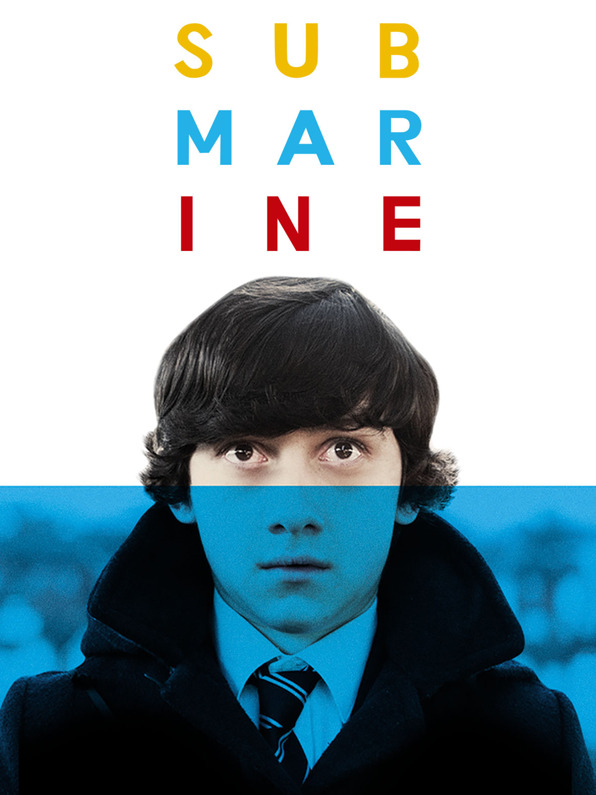
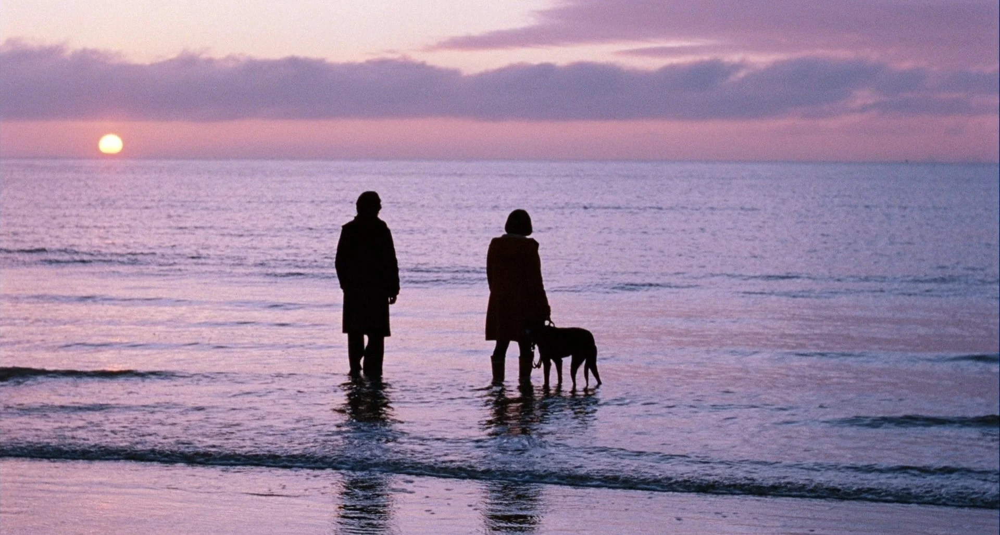
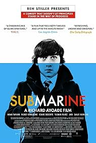
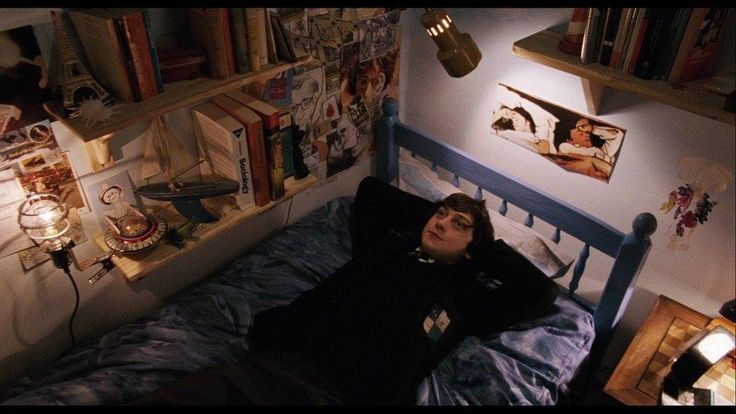

Sinopsis
Submarine sigue a Oliver Tate, un adolescente galés de 15 años que intenta conquistar a Jordana Bevan mientras también intenta salvar el matrimonio de sus padres. Oliver es inteligente, raro, inseguro y muchas veces egoísta, lo que hace que la película se sienta honesta y divertida.
La historia mezcla romance adolescente, humor seco y drama familiar. No presenta la adolescencia como algo perfecto, sino como una etapa llena de confusión, fantasías, errores y momentos incómodos.


Reseña
La película destaca por su estilo visual: colores fríos, encuadres simétricos, paisajes nublados y una estética muy indie. Richard Ayoade convierte la vida de Oliver en algo casi teatral, lleno de narración interna, capítulos y momentos visualmente memorables.
Su mayor fuerza está en el tono: es graciosa sin ser exagerada, triste sin ser melodramática y romántica sin idealizar demasiado a sus personajes.
Personajes principales
Galería de imágenes


Música
La banda sonora es uno de los elementos más recordados de la película. Alex Turner, vocalista de Arctic Monkeys, compuso canciones originales para la película, como Hiding Tonight, Glass in the Park, Stuck on the Puzzle y Piledriver Waltz.
La música refuerza el tono melancólico, íntimo y adolescente de la historia.
Conclusión
Submarine es ideal para quienes disfrutan películas con estética indie, humor británico, personajes imperfectos y una mirada nostálgica sobre la adolescencia. No es una película de grandes acontecimientos, sino de detalles: miradas, silencios, canciones y errores emocionales.